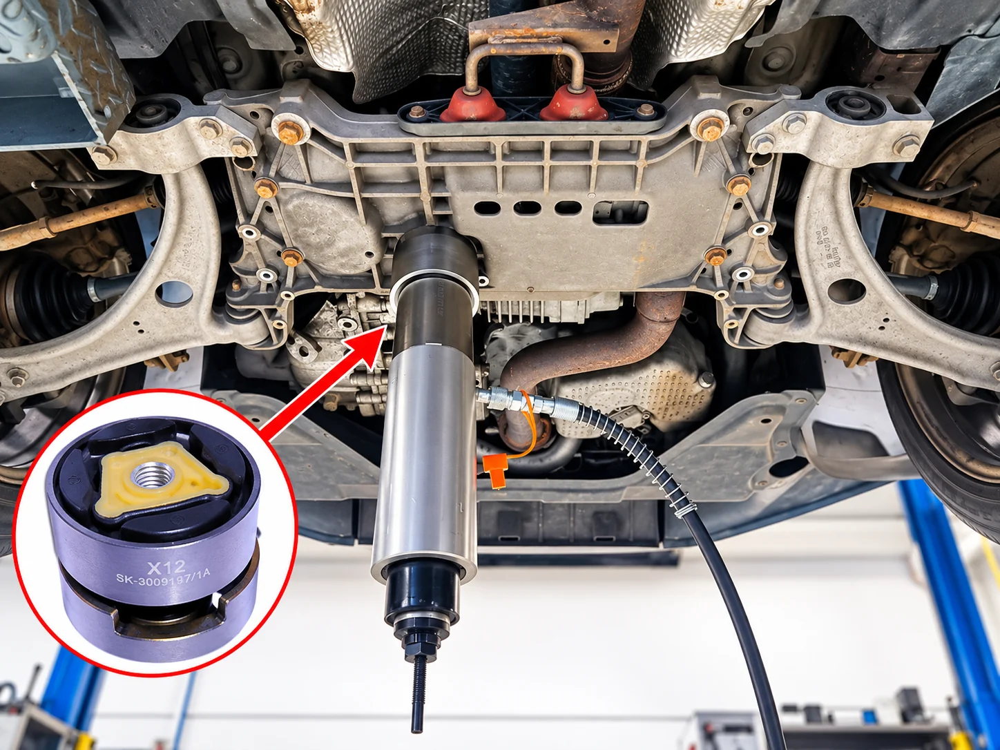
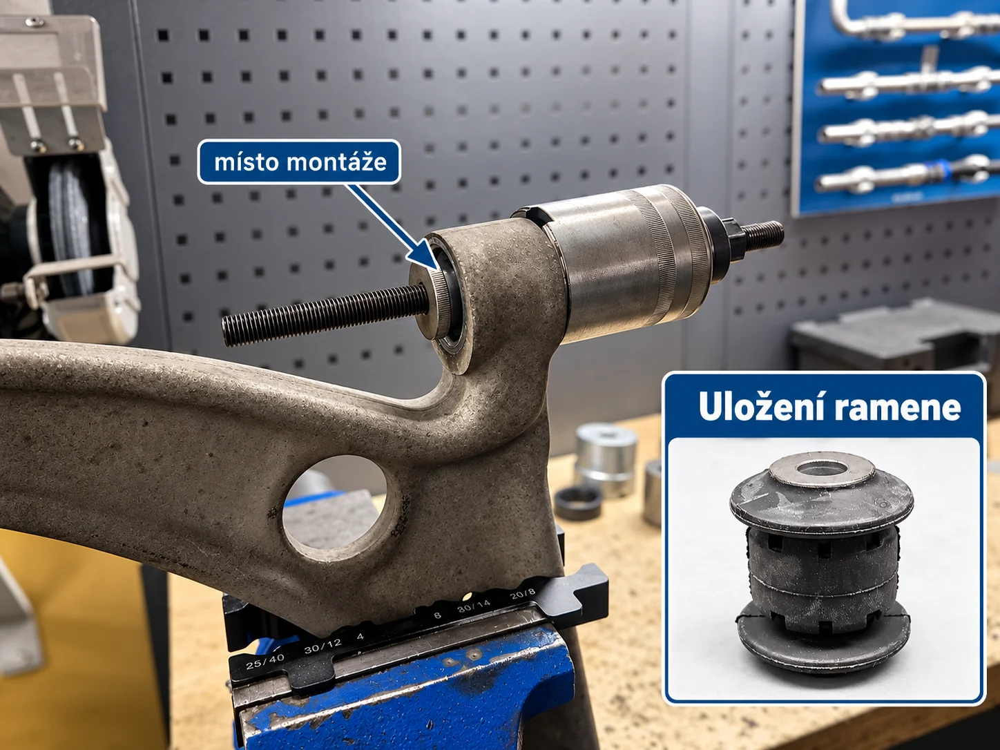
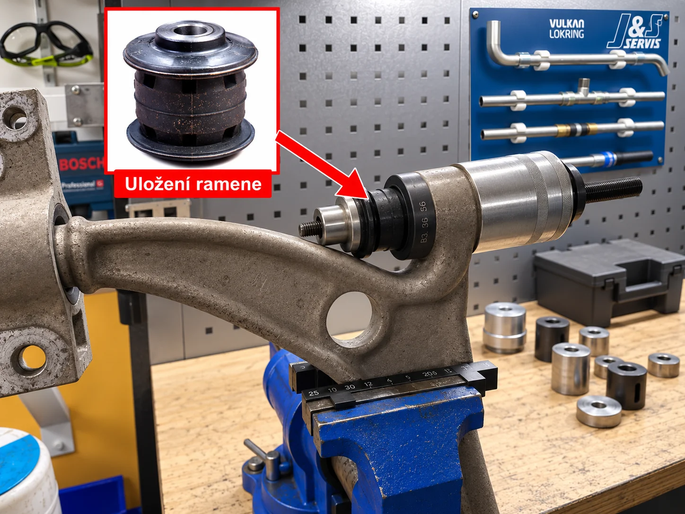
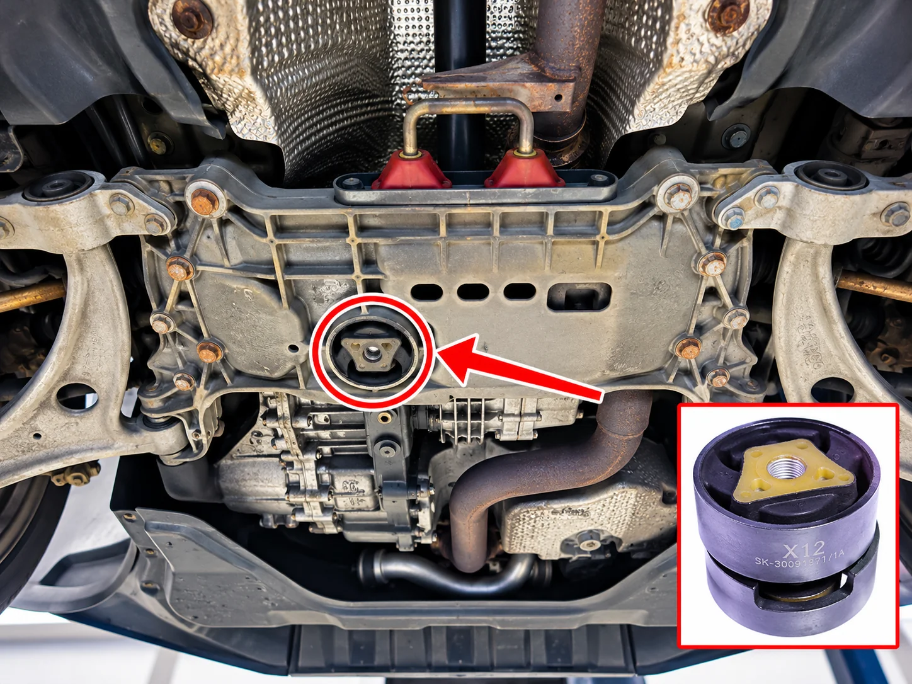
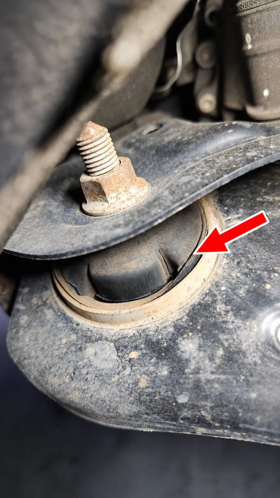

Austausch der Lager von Achsträger und Querlenkern
Spezialisierte Fahrwerksreparaturen mit Original-VAS-Werkzeugen.
Bei J&S servis diagnostizieren und ersetzen wir Gummimetalllager von Achsträger und Querlenkern an Fahrzeugen von Volkswagen, Audi, Škoda, SEAT und CUPRA.
Verschlissene oder beschädigte Lager können Fahrwerksklopfen und Vibrationen, unpräzise Lenkung, eingeschränkte Stabilität oder ungleichmäßigen Reifenverschleiß verursachen.
Austausch ohne unnötigen Achsausbau
Mit speziellen Presswerkzeugen können wir bei ausgewählten Fahrzeugen die Lager direkt am Fahrzeug ersetzen, ohne den Achsträger vollständig auszubauen.
Dieses Verfahren kann den Demontageumfang verringern, die Reparaturzeit verkürzen und in manchen Fällen auch die Gesamtkosten senken.
Die Möglichkeit hängt von Fahrzeugkonstruktion, Zugänglichkeit der Lager und Herstellervorgaben ab. Falls nötig, führen wir erforderliche Teildemontagen durch.
Original-VAS-Werkzeuge
Beim Austausch von Achsträgerlagern verwenden wir unter anderem das Presswerkzeug VAS 6779 A. Für Querlenkerlager nutzen wir passende Presswerkzeuge entsprechend der Bauart des jeweiligen Teils.
Spezialwerkzeuge ermöglichen das kontrollierte Auspressen des alten Lagers und präzise Einpressen des neuen Teils unter Einhaltung von Einbaulage, Orientierung und Arbeitsvorgaben.
Der korrekte Einbau ist entscheidend für die Lagerfunktion, die Lebensdauer der Reparatur und sichere Fahreigenschaften.
Fotos aus unserer Werkstatt
Beispiele für den Einsatz von Presswerkzeugen beim Austausch von Achsträger- und Querlenkerlagern. Die Fotos zeigen verschiedene Reparaturphasen.





Achsvermessung nach der Reparatur
Nach dem Lagerwechsel beurteilen wir den Bedarf einer Achsvermessung und -einstellung nach Arbeitsumfang und Herstellervorgaben.
Zum Messen und Einstellen nutzen wir die professionelle 3D-Achsmesstechnik Beissbarth VAS 701 011.
Reparaturumfang und Preis
Umfang und Preis richten sich individuell nach Fahrzeug, Lagerart, Zugänglichkeit und technischem Zustand des Fahrwerks. Zusatzarbeiten und Achsvermessung werden nach Absprache gesondert berechnet.
Vor der Terminvereinbarung
Quietschen, Klopfen oder ein verändertes Fahrverhalten bestimmen allein kein defektes Lager. Den Reparaturumfang bestätigen wir durch Prüfung des konkreten Fahrwerks; eine anschließende Achsvermessung richtet sich nach dem ausgeführten Eingriff.